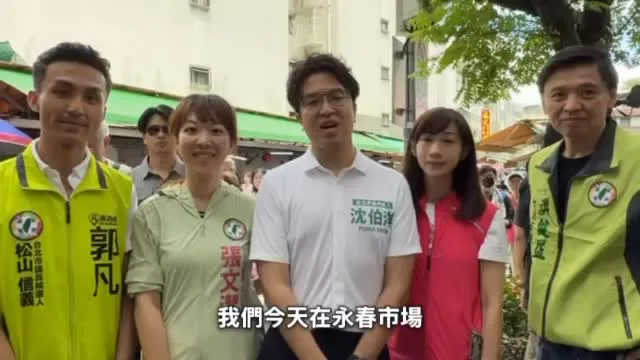
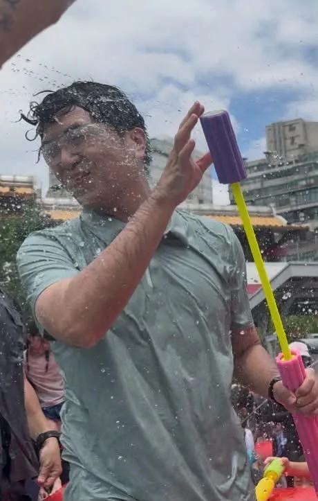

沈伯洋pumashen

@pumashen:今天謝謝永春市場的大家！ 很不好意思的是 今天比預期的更多人 所以有些沒有合照到 或者沒有簽到 後來攤商也來不及進去掃 我知道有不少人先進去消費 真的對大家很不好意思！ 我一定會再回來 跟市場裡的朋友聊聊！ Orz
Accounts
| 平台 | 帳號 | 已收錄貼文 | 最後更新 |
|---|---|---|---|
| 官網 | https://puma.taipei/ | 24 | 2026-08-30 00:00 |
| https://www.facebook.com/puma.taipei/ | 96 | 2026-08-30 15:00 | |
| https://www.facebook.com/pumashen/ | 50 | 2026-08-29 22:04 | |
| https://www.instagram.com/pumashen/ | 78 | 2026-08-28 14:50 | |
| Threads | https://www.threads.com/@pumashen | 119 | 2026-08-30 22:00 |
| YouTube | https://www.youtube.com/@PumaShen | 76 | 2026-08-30 21:00 |
| X | https://x.com/pumashen | 0 | — |
| LINE 官方帳號 | https://join.puma.taipei/line/UkfBBgZ2 | 0 | — |
Timeline
顯示 443 / 443 則

@pumashen:今天謝謝永春市場的大家！ 很不好意思的是 今天比預期的更多人 所以有些沒有合照到 或者沒有簽到 後來攤商也來不及進去掃 我知道有不少人先進去消費 真的對大家很不好意思！ 我一定會再回來 跟市場裡的朋友聊聊！ Orz

@pumashen:明天早上來南港公園！ 歡迎來走走、聊聊、打聲招呼！ ⠀ 8/31（一）07:00 📍南港公園

@pumashen:今天參加延鳳的水上親子派對 本來要問各位小朋友 喜不喜歡喝鮮乳 結果….. 根本不給問！


Let's all head out and support different sheltered workshops—they’re beautiful, delicious, and of...


像育成蕃薯藤 育成蕃薯藤餐廳 這樣的庇護園區、庇護工場，除了節日禮盒外，也需要大家日常消費的支持，他們的營運才能永續！ ⠀ 大家可以一起分頭支持不同的庇護工場，都是又漂亮又好吃CP值又高！
0829受訪 #受訪 #庇護工場 #刪預算可更有智慧 #保護弱勢

Step up to the plate with Council Member Wang Min-sheng and hit a home run for Team Taipei!

周末行程來囉，這禮拜不用畫烏龜，暑假尾聲玩水去！ ⠀ 8/29（六） ⠀ 09:00 📍東湖五分市場 ⠀ 8/30（日） ⠀ 09:00 📍永春市場 ⠀ 10:00 林延鳳議員＿i鳳水上派對親子活動 📍七星公園

把樹種回來，降溫台北。 都市微森林，讓綠蔭走進每個人的日常，打造更涼爽、更宜居的台北。 #台北順起來 #你的市長沈伯洋
0828受訪-1 #受訪 #公務人員減壓 #教師減壓 #第三方解決機製 #親師衝突 #家庭教育中心
Joanne Yen is truly fearless—not only does she fight for our community, she’s even bold enough to...

明天早上來南港公園！ 歡迎來走走、聊聊、打聲招呼！ ⠀ 8/31（一） 07:00 📍南港公園

0830受訪-1 #受訪 #市政辯論 #安置量能 #社工量能

像 育成社福基金會-育成蕃薯藤餐廳 這樣的庇護園區、庇護工場，除了節日禮盒外，也需要大家日常消費的支持，他們的營運才能永續！ ⠀ 大家可以一起分頭支持不同的庇護工場，都是又漂亮又好吃CP值又高！

像育成蕃薯藤 育成蕃薯藤餐廳 這樣的庇護園區、庇護工廠，除了節日禮盒外，也需要大家日常消費的支持，他們的營運才能永續！ ⠀ 大家可以一起分頭支持不同的庇護工廠，都是又漂亮又好吃CP值又高！

Councilor Chang Wen-chieh prepared a giant bowl of shaved ice for me, symbolizing the weight of m...

周末行程來囉， 這禮拜不用畫烏龜， 暑假尾聲玩水去！ ⠀ 8/29（六） ⠀ 09:00 📍東湖五分市場 ⠀ 8/30（日） ⠀ 09:00 📍永春市場 ⠀ 10:00 林延鳳議員＿i鳳水上派對親子活動 📍七星公園

把樹種回來，降溫台北。 都市微森林，讓綠蔭走進每個人的日常，打造更涼爽、更宜居的台北。 #台北順起來 #你的市長沈伯洋
@pumashen:平常問A答B就算了，庇護工廠這題，蔣萬安可以選擇不發聲，結果卻選擇跟翁曉玲站在一起，再踩弱勢一腳。 事實很清楚，就是翁曉玲濫砍預算，而且在明知會傷到弱勢的狀況之下，執意為之，才導致總統府無法繼續訂購。 從頭到尾就是立法院砍單。 這就像，先把人家的錢搶走，再回頭問：「你怎麼不花錢買東西？」 蔣萬安刻意只講對自己有利的部分、誤導大眾，為了政治攻防，連同理心都不要，不會良心不安嗎？ 蔣萬安說要有智慧地處理？有智慧的處理就是告訴你台北的國民黨委員不要砍，不要跟著翁曉玲投票，這才叫有智慧。 作為父母官，能把這種話說得毫不遲疑，真的讓人匪夷所思。

0828受訪 #受訪 #象山公園 #運動文化 #無菸城市 #普發二萬 #樹蔭公平
@pumashen:謝謝團隊的小驚喜～ 大家追蹤 是想留言嗎哈哈哈

暑假尾聲，林延鳳議員舉辦水上親子活動，最適合帶孩子一起玩水、開心放電！ ⠀ 爸媽帶孩子出門，不只希望他們玩得開心，心裡也會擔心通學環境、衛生和活動安全。而延鳳議員長期深耕士林北投，除了關心兒童福利與育兒資源，也持續為校園安全、通學環境及友善親子空間發聲。 ⠀ 育兒不能是「孤獨育兒」，更不該成為一場考驗家長體力與運氣的障礙賽。台北應該用完善的環境與政策，跟家長一起照顧孩子。因此，我提出「家長版1999」、帶孩子走進更多藝文場所的「親子同行卡」，以及讓10萬名家長獲得喘息支持的「家庭一站通」。 ⠀ 未來，我會和延鳳一起努力，讓台北成為一座孩子安心成長、家長有人支持的城市。 #台北順起來 #你的市長沈伯洋

0830受訪 #受訪 #市政辯論 #兒童保護 #選舉補助款 #台北智庫-台北研究院 #城市規劃 #運動驛站
@pumashen:像育成蕃薯藤 @ycyamch 這樣的庇護園區、庇護工場， 除了節日禮盒外， 也需要大家日常消費的支持， 營運才能永續！ ⠀ 大家可以一起分頭支持 不同的庇護工場， 都是又漂亮又好吃 CP值又高！
0829受訪-1 #受訪 #翁章梁 #蔡易餘 #首都選戰 #洋流

@pumashen:〖洋流好物 捐款常見問題解答〗 ⠀ 𝙌. 小物可以換嗎？ 𝙌. 沒有收到確認信件怎麼辦？ 𝙌. 如何變更寄送地址？ ⠀ 過去一週大家最常問的問題， 我們搜集起來， 今天一次整理解答給大家！

@pumashen:周末行程來囉，這禮拜不用畫烏龜， 暑假尾聲玩水去！ ⠀ 8/29（六） ⠀ 09:00 📍東湖五分市場 ⠀ 8/30（日） ⠀ 09:00 📍永春市場 ⠀ 10:00 林延鳳議員＿i鳳水上派對親子活動 📍七星公園

把樹種回來，降溫台北。 都市微森林，讓綠蔭走進每個人的日常，打造更涼爽、更宜居的台北。 #台北順起來 #你的市長沈伯洋

Bring Back the Trees, Cool Down Taipei. Urban Micro-Forests: Bringing Green Shade into Daily Life...
@pumashen:每一件好物，都代表一份讓台北進步的力量.ᐟ .ᐟ ⠀ 從帽子、衣服、提袋，到可愛的「奔奔」與「抱抱」，歡迎大家找到喜歡的組合，一起加入洋流、讓台北順起來！